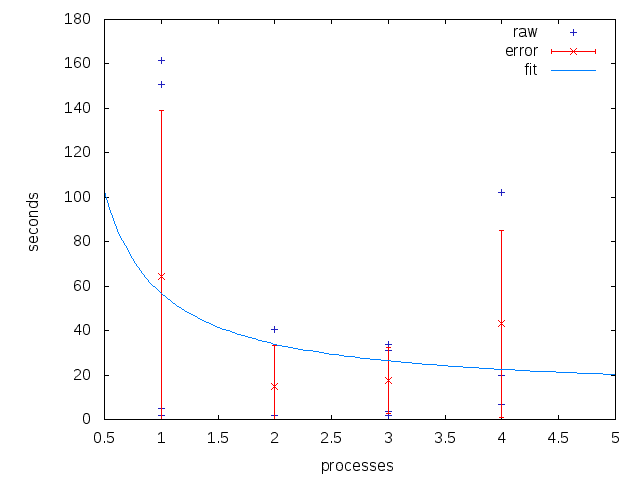

Org Mode: Data Collection and Analysis
Table of Contents
Data Collection and Analysis
This example uses Org-babel to automate a repeated data-collection and analysis task. A Ruby code block is used to scrape data from the output of a computational experiment. This data is then written to an Org-mode table. A block of R code reads from this table and calculates lines of fit. Finally a block of gnuplot code is used to graph the results of both the raw data and the R analysis. By performing all of these steps within an Org-mode document working notes, discussion, and TODOs can be naturally interspersed with the code, and the results can easily be published to HTML or PDF for distribution.
Advantages
- Org-babel handles passing the data between different programming languages.
- Raw data persists in tables in the Org-mode file.
- Working notes can be collocated with the code/results to which they refer.
- Tasks can be saved and updated from within the same file in which the work is being performed.
- Org-mode exporting facilities can be used to export the results to HTML or PDF for distribution.
Disadvantages
- This approach can allow the experimenter to use whatever language is most comfortable for each sub-task, sometimes resulting in an overly complicated work flow. For example, in the example below I did not have to learn how to calculate the mean and standard deviation in R since it was easier for me to do so in Ruby even though a full R solution would have been more efficient.
Example
Code for running experiment and collecting the results
This portion will not be repeatable as it would require the entire experimental setup. It is provided for demonstration.
Ruby run-timer-test: Runs the actual experiment. This is tangled to an external file and run on the command line – since these runs can take several days, I prefer to run them outside of Emacs (normally using screen).
DEFAULT_CMDLINE = "--swap 0 --del 0 --mut 0.1 example.c " def run_and_package(cmdline, package) puts "#{package}: ../modify #{cmdline}" start_time = Time.now %x{../modify #{cmdline}} total_time = Time.now - start_time %x{echo "wall clock #{total_time}" >> gcd.c-.debug} %x{rake package[#{package}]} end 100.times do |n| # run with default options run_and_package(DEFAULT_CMDLINE, "normal_#{n}") run_and_package("--pll_fit 2 "+DEFAULT_CMDLINE, "pll_2_#{n}") run_and_package("--pll_fit 3 "+DEFAULT_CMDLINE, "pll_3_#{n}") run_and_package("--pll_fit 4 "+DEFAULT_CMDLINE, "pll_4_#{n}") run_and_package("--pll_fit 5 "+DEFAULT_CMDLINE, "pll_5_#{n}") run_and_package("--pll_fit 6 "+DEFAULT_CMDLINE, "pll_6_#{n}") run_and_package("--pll_fit 7 "+DEFAULT_CMDLINE, "pll_7_#{n}") run_and_package("--pll_fit 8 "+DEFAULT_CMDLINE, "pll_8_#{n}") end
Ruby parse-output: The execution of run-timer-test leaves results
distributed across many text log files. The following Ruby source
code block is used to collect results from these files and dump them
into an Org-mode file as a table.
def look(path) processors = if path.match(/normal/) "1" elsif path.match(/pll_(\d+)_/) $1 else 0 end results = File.read(File.join(path, "gcd.c-.debug")) generations = results.match(/^Generations to solution: (\d+)/) ? Integer($1) : -1 total = results.match(/^ +TOTAL +([\d\.]+) /) ? Float($1) : -1 wall = results.match(/^wall clock ([\d\.]+)/) ? Float($1) : -1 fitness = results.match(/^ +fitness +([\d\.]+) +([\d\.]+) /) ? Float($2) : -1 mutation = results.match(/^ +mutation +([\d\.]+) +([\d\.]+) /) ? Float($2) : -1 [path, processors, total, wall, good_test, bad_test, compile, fitness, generations] end # puts "| path | processors | total | wall | fitness | mutation | generations |" # puts "|-----------" Dir.entries('./').select{|e| e.match(/[normalpll]+[_\d]+/)}. map{|e| look(e)}.each{|row| puts "| "+row.join(" | ")+" |"}
Data
Here is fake example output from the parse-output Ruby source code
block above.
| normal_0 | 1 | 150.264 | 150.631066 | 163.0 | 1 |
| pll_2_0 | 2 | 40.025 | 40.698944 | 39.0 | 3 |
| pll_3_0 | 3 | 2.504 | 31.214553 | 2.0 | 1 |
| normal_5 | 1 | 1.499 | 1.866362 | 2.0 | 2 |
| pll_2_16 | 2 | 1.43 | 1.985152 | 1.0 | 1 |
| normal_31 | 1 | 1.501 | 1.867453 | 2.0 | 1 |
| pll_2_29 | 2 | 1.431 | 1.978312 | 1.0 | 1 |
| normal_22 | 1 | 4.562 | 4.929897 | 3.0 | 3 |
| pll_4_5 | 4 | 3.609 | 6.953026 | 4.0 | 1 |
| normal_4 | 1 | 161.097 | 161.464041 | 181.0 | 1 |
| pll_3_3 | 3 | 1.751 | 33.819836 | 2.0 | 1 |
| pll_4_2 | 4 | 99.546 | 102.20237 | 72.0 | 2 |
| pll_4_1 | 4 | 5.502 | 19.875383 | 3.0 | 1 |
| pll_3_1 | 3 | 1.976 | 3.540565 | 2.0 | 2 |
| pll_3_6 | 3 | 1.433 | 2.018572 | 1.0 | 1 |
Analysis
The code blocks in this section will be repeatable as they rely on the fake data given above.
Ruby calculate mean and standard deviation over the second column
by_procs = {}
raw.each do |row|
by_procs[row[1]] ||= []
by_procs[row[1]] << row[3]
end
by_procs.each do |key, vals|
mean = vals.inject(0){|sum, n| sum + n} / vals.size
stddev = Math.sqrt(vals.inject(0){|sum, n| sum + ((n - mean).abs * (n - mean).abs)} / vals.size)
puts "| #{key} | #{mean} | #{stddev} |"
end
| 1 | 64.1517638 | 75.1190856698136 |
| 2 | 14.8874693333333 | 18.2514689828405 |
| 3 | 17.6483815 | 14.9070317402304 |
| 4 | 43.0102596666667 | 42.1863032424348 |
R find the curve that best fits these data
procs <- data$V1 times <- data$V2 df <- data.frame(procs, times) nlsfit <- nls(times~c0 + (load/procs), data=df, start=list(load = 100, c0 = 20)) summary(nlsfit)
Formula: times ~ c0 + (load/procs)
Parameters:
Estimate Std. Error t value Pr(>|t|)
load 45.70 36.71 1.245 0.339
c0 11.12 21.90 0.508 0.662
Residual standard error: 21.36 on 2 degrees of freedom
Number of iterations to convergence: 1
Achieved convergence tolerance: 3.924e-08
gnuplot plot the raw data, along with the error bars and the best fit curve.
set xrange [0.5:5] set yrange [0:] set ylabel "seconds" set xlabel "processes" plot data using 2:4 with points title 'raw' linecolor 8 replot mydata using 1:2:3 with errorbars title 'error' linecolor 1 replot 11.12 + 45.70/x title 'fit'
Which produces the following 
Distribution
Using Org-mode’s exporting capabilities it is easy to publish the entire working file including source-code and raw data, to share sections using `org-narrow-to-subtree’, or even to share individual tables or graphs.